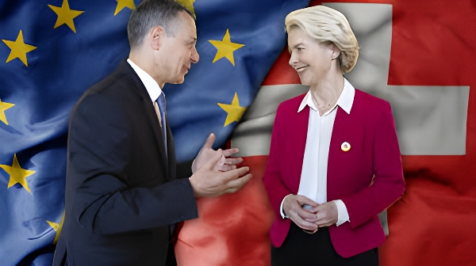

Le 2 mars 2026, la présidente de la Commission européenne Ursula von der Leyen et le président de la Confédération Guy Parmelin ont signé à Bruxelles un ensemble inédit d'accords bilatéraux — les « Bilatérales III ». Vingt-cinq ans après les Bilatérales I, la Suisse s'apprête à soumettre ce paquet à son Parlement, puis potentiellement à son peuple. Un dossier emblématique qui concentre toutes les tensions de la démocratie helvétique : souveraineté, identité, libre circulation, compétitivité.
Depuis 1992 — date du refus par le peuple suisse d'adhérer à l'Espace économique européen — la Suisse a construit ses relations avec l'Union européenne par une succession d'accords sectoriels. Les Bilatérales I (1999), portant sur sept domaines clés — transport aérien, transport terrestre, libre circulation des personnes, marchés publics, recherche, agriculture, reconnaissance mutuelle — ont formé le socle d'une intégration économique profonde sans adhésion politique. Les Bilatérales II (2004) ont étendu la coopération à Schengen/Dublin, à la fiscalité de l'épargne et aux pensions.
Mais cette architecture a montré ses limites. L'UE réclamait depuis des années un accord-cadre institutionnel pour homogénéiser l'application du droit européen dans les domaines couverts par les accords. En 2021, le Conseil fédéral avait rompu les négociations sur un tel accord, jugeant les compromis sur la libre circulation des personnes et les mesures d'accompagnement inacceptables. Cette rupture a figé la relation : la Suisse se voyait exclue de programmes comme Horizon Europe, tandis que les accords existants risquaient de devenir progressivement obsolètes.
Les Bilatérales III se décomposent en deux volets. La partie stabilisation actualise quatre accords existants pour les mettre en conformité avec le droit européen actuel : transport aérien, transport terrestre, libre circulation des personnes (ALCP), et reconnaissance mutuelle des évaluations de conformité. Elle introduit surtout des mécanismes institutionnels : un comité mixte renforcé, un mécanisme de règlement des différends avec arbitrage, et une clause de non-discrimination.
La partie développement crée trois nouveaux accords dans des secteurs stratégiques. L'accord sur l'électricité vise à intégrer la Suisse au marché européen de l'énergie, crucial après les tensions énergétiques de 2022 et l'abandon du nucléaire allemand. L'accord sur la santé ouvre la voie à une coopération renforcée en matière de sécurité sanitaire. L'accord sur la sécurité alimentaire harmonise les normes. S'y ajoute l'accord sur la participation de la Suisse aux programmes européens — Horizon Europe, Erasmus+, Digital Europe — signé séparément en novembre 2025 et entré en application provisoire.
Le Conseil fédéral rompt les négociations sur l'accord-cadre institutionnel. La Suisse est exclue d'Horizon Europe. La relation avec l'UE entre dans une période de gel partiel.
Ouverture officielle des négociations sur la base d'une nouvelle approche par paquet. L'objectif : éviter un accord-cadre unique au profit d'une architecture sectorielle intégrée.
Conclusion matérielle des négociations. Le résultat rallie une large majorité lors de la consultation publique, menée jusqu'en octobre 2025.
Signature de l'accord EUPA sur les programmes UE. La Suisse réintègre Horizon Europe avec effet rétroactif au 1er janvier 2025.
Signature officielle du paquet complet à Bruxelles. Le dossier est transmis au Parlement suisse le 13 mars 2026, accompagné d'un message de 94 actes législatifs à adapter.
Le peuple suisse se prononce sur l'initiative UDC « Pas de Suisse à 10 millions », premier test politique autour des enjeux migratoires liés à la libre circulation.
La Suisse présente en 2026 une économie résiliente mais sous tension. Sa croissance est attendue à 1,0 % selon le KOF, après une contraction au troisième trimestre 2025 liée aux effets d'anticipation dans le secteur pharmaceutique — dopé par les exportations avancées vers les États-Unis avant l'imposition de droits de douane. Ces droits, qui ont atteint 39 % sur des produits emblématiques comme le chocolat, les montres ou les machines, ont contraint le Conseil fédéral à des négociations intenses avec Washington, aboutissant à un accord en novembre 2025 ramenant les tarifs à 15 % en échange d'investissements promis.
Dans ce contexte, l'accès au marché intérieur européen — qui absorbe environ 60 % des exportations suisses — n'est pas une option abstraite, mais une nécessité structurelle. Le franc fort, valeur refuge par excellence, continue de peser sur la compétitivité des exportateurs. La Banque nationale suisse (BNS) a maintenu son taux directeur à 0 % en décembre 2025, évoquant la possibilité de taux négatifs si les pressions déflationnistes persistaient.
| Indicateur | 2024–2025 | Prév. 2026 |
|---|---|---|
| Croissance PIB | +1,5 % / +1,1 % | +1,0 % (KOF) |
| Inflation | 1,1 % / 0,2 % | ~0,3 % |
| Taux directeur BNS | 1,0 % → 0 % | 0 % |
| Part UE dans exports | ~58 % | ~60 % |
| Droits de douane US | jusqu'à 39 % | 15 % (accord nov. 2025) |
Le Conseil fédéral a choisi de soumettre le paquet à un référendum facultatif, et non obligatoire — ce qui signifie que 50 000 signatures suffisent pour déclencher une votation populaire, sans exiger la double majorité peuple-cantons. Cette décision est contestée par une partie de la classe politique, notamment par des professeurs de droit constitutionnel qui estiment que l'ampleur des changements institutionnels aurait justifié un référendum obligatoire. L'UDC, farouche opposante, juge la démarche anti-démocratique.
À gauche, les syndicats surveillent attentivement les mesures d'accompagnement — ces mécanismes protégeant les salaires suisses face aux travailleurs détachés européens — que la nouvelle architecture bilatérale réforme partiellement. Le ministre de la Justice Beat Jans s'est voulu rassurant, estimant qu'une hausse des demandes de résidence permanente de 4 000 à 20 000 par an était plausible à long terme.
« Il est important pour la Suisse de disposer d'un accès sur mesure au marché intérieur de l'UE. »
— Conseil fédéral suisse, message au Parlement, 13 mars 2026« À mon avis, les changements institutionnels ont une telle portée qu'il y a beaucoup d'arguments pour un référendum obligatoire. »
— Andreas Glaser, professeur de droit public, Université de ZurichLes Bilatérales III ne s'inscrivent pas dans un vide géopolitique. La guerre en Ukraine, la montée du protectionnisme américain sous Trump, le réalignement des chaînes d'approvisionnement mondiales : autant de facteurs qui ont modifié le calcul stratégique de Berne. Le Conseil fédéral invoque explicitement le contexte géopolitique tendu pour justifier l'urgence d'un ancrage stable avec l'UE, premier partenaire commercial et voisin immédiat.
La Suisse se retrouve à devoir arbitrer entre deux logiques : celle du libre-échangiste neutre, qui table sur des accords bilatéraux avec le plus grand nombre, et celle de la puissance économique européenne, qui a besoin de règles communes pour fonctionner. Le paquet signé le 2 mars est une tentative de réconcilier ces deux identités — sans garantie que le peuple suisse suivra.
Les Bilatérales III ne sont pas seulement un texte juridique de 94 actes législatifs. Elles posent une question que la Suisse reporte depuis 1992 : jusqu'où peut-elle s'intégrer à l'Europe sans cesser d'être pleinement elle-même ? Le débat qui s'engage au Parlement — et, peut-être, dans les urnes — n'est pas celui d'une technique diplomatique, mais celui d'un modèle politique. Deux camps s'affrontent déjà : ceux qui voient dans cet accord la condition de la prospérité future, et ceux qui y lisent un abandon progressif d'une souveraineté durement préservée. La Suisse a la réputation de trouver des voies médianes introuvables ailleurs. Cette capacité sera mise à l'épreuve.
Am 2. März 2026 unterzeichneten EU-Kommissionspräsidentin Ursula von der Leyen und Bundespräsident Guy Parmelin in Brüssel ein umfassendes Paket bilateraler Abkommen — die «Bilateralen III». Fünfundzwanzig Jahre nach den Bilateralen I steht die Schweiz vor einer historischen Entscheidung über ihre Beziehung zur EU, die Souveränität, Identität, Personenfreizügigkeit und Wettbewerbsfähigkeit zugleich berührt.
Seit dem Nein zur EWR-Mitgliedschaft im Jahr 1992 hat die Schweiz ihre Beziehungen zur EU durch sektorale Abkommen aufgebaut. Die Bilateralen I (1999) umfassten sieben Bereiche — Landverkehr, Luftverkehr, Personenfreizügigkeit, öffentliches Beschaffungswesen, Forschung, Landwirtschaft und gegenseitige Anerkennung von Konformitätsbewertungen. Die Bilateralen II (2004) ergänzten dieses Fundament um Schengen/Dublin und die Zinsbesteuerung.
Doch dieses Modell zeigte Risse. Die EU forderte ein institutionelles Rahmenabkommen, das die dynamische Rechtsübernahme regeln sollte. 2021 brach der Bundesrat die Verhandlungen ab — mit erheblichen Folgen: Ausschluss der Schweiz aus Horizon Europe, Stillstand in mehreren Bereichen. Die Bilateralen III sind das Ergebnis einer neuen Verhandlungsrunde, die im März 2024 begann und im Dezember 2024 materiell abgeschlossen wurde.
Abbruch der Verhandlungen über das institutionelle Rahmenabkommen. Ausschluss der Schweiz aus Horizon Europe.
Start neuer Verhandlungen auf Basis des Paketansatzes.
Materieller Abschluss der Verhandlungen. Ergebnis der Konsultation zeigt breite Zustimmung.
Unterzeichnung des EUPA-Abkommens. Schweiz tritt Horizon Europe rückwirkend ab 1. Januar 2025 bei.
Unterzeichnung des Gesamtpakets in Brüssel. Botschaft an das Parlament am 13. März 2026.
Volksabstimmung über SVP-Initiative «Keine 10-Millionen-Schweiz» — erster politischer Test zum Thema Personenfreizügigkeit.
Die Schweizer Wirtschaft zeigt sich 2026 widerstandsfähig, aber unter Druck. Das KOF prognostiziert ein reales BIP-Wachstum von 1,0 %, nach einem Rückgang im dritten Quartal 2025, der auf Vorzieheffekte im Pharmabereich zurückzuführen ist. Die USA hatten Zölle von bis zu 39 % auf Schweizer Produkte eingeführt. Ein Abkommen im November 2025 senkte diese auf 15 %. Die SNB hält ihren Leitzins bei 0 % und schließt Negativzinsen nicht aus.
In diesem Kontext ist der Zugang zum EU-Binnenmarkt für die Schweiz keine theoretische Frage: rund 60 % der Exporte gehen in die EU. Ohne stabile Verträge droht schleichende Erosion — ein Szenario, das für Industrie, Pharma, Maschinenbau und Forschung gleichermaßen gilt.
| Indikator | 2024–2025 | Prognose 2026 |
|---|---|---|
| BIP-Wachstum | +1,5 % / +1,1 % | +1,0 % (KOF) |
| Inflation | 1,1 % / 0,2 % | ~0,3 % |
| SNB-Leitzins | 1,0 % → 0 % | 0 % |
| EU-Anteil an Exporten | ~58 % | ~60 % |
| US-Zölle auf CH-Prod. | bis 39 % | 15 % (Nov. 2025) |
Der Bundesrat hat sich für ein fakultatives Referendum entschieden, nicht für ein obligatorisches. 50 000 Unterschriften genügen, um eine Volksabstimmung auszulösen — ohne die Notwendigkeit einer Kantonsabstimmung. Diese Entscheidung ist umstritten: Verfassungsrechtler sind gespalten. Die SVP, die das Paket ablehnt, spricht von einer «Aushöhlung der Demokratie».
Die Gewerkschaften beobachten die flankierenden Maßnahmen — jene Schutzregeln für Schweizer Löhne gegenüber entsandten EU-Arbeitnehmern — genau. Justizminister Beat Jans beruhigte: Der Anstieg dauerhafter Aufenthaltsgesuche dürfte sich langfristig auf 4 000 bis 20 000 jährlich belaufen.
« Für die Schweiz ist ein maßgeschneiderter Zugang zum EU-Binnenmarkt unverzichtbar. »
— Bundesrat, Botschaft an das Parlament, 13. März 2026« Die institutionellen Änderungen haben eine solche Tragweite, dass es gute Argumente für ein obligatorisches Referendum gibt. »
— Andreas Glaser, Professor für öffentliches Recht, Universität ZürichDie Bilateralen III sind kein technisches Dokument. Sie stellen eine Frage, die die Schweiz seit 1992 aufschiebt: Wie weit kann sie sich integrieren, ohne aufzuhören, sie selbst zu sein? Die Debatte, die im Parlament beginnt — und möglicherweise an der Urne endet —, ist keine diplomatische Feinarbeit. Zwei Lager stehen sich gegenüber: jene, die in diesem Paket die Bedingung künftigen Wohlstands sehen, und jene, die darin einen schrittweisen Souveränitätsverlust lesen. Die Schweiz hat den Ruf, Mittelwege zu finden, die anderswo undenkbar sind. Diese Fähigkeit wird auf die Probe gestellt.